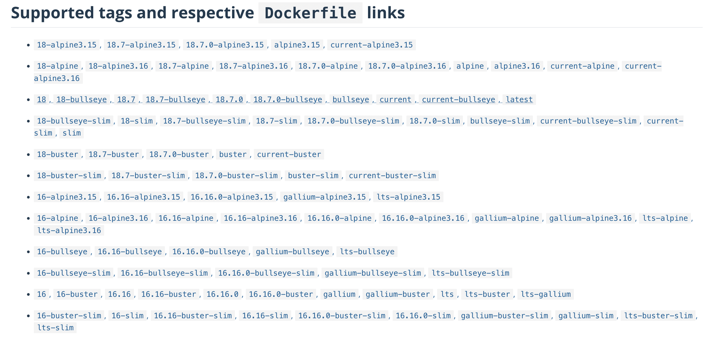

Sufijos en tags de Docker
Publicado el 29 de July de 2022 en DevOps • 2 min de lectura
El otro día en el trabajo estuve mirando con un compañero para actualizar la imagen de docker que estábamos ejecutando en el pipeline y empezamos a ver imágenes con coletillas de buster, alpine o bullseye, momento en el que nos empezamos a mirar con cara de poker sin saber muy bien cuál elegir. En este artículo, a modo de chuleta, explico los nombres más comunes que puedes encontrar en los contenedores de Dockerhub.
A modo de ejemplo he elegido la imagen de node 16 (actualmente está la 18) para detallar todos estos sufijos.

Imagen por defecto
La imagen oficial, sin nada extra, se puede bajar como node:16 (o node:16.16.0 para bajar una versión concreta).
alpine
Alpine es una distribución de Linux creada específicamente para usarse en contenedores. Es una distribucióncreada con la intención de ser segura y ligera, lo cual puede ser bueno si el tamaño es un requisito pero son imágenes que carecen de muchas utilidades de Linux como bash o git. En el caso de node, estas imágenes están etiquetadas como node:16.16.0-alpine, existiendo variantes para versiones de esta distribución (alpine3.15 y alpine3.16).
Debian releases
Otra distribución de Linux que se usa para contenedores es Debian, con sus diferentes releases. Estas releases (bullseye, buster o strech son las tres mas recientes ahora mismo) indican la versión de Debian en la que se basa el contenedor. Para node las puedes bajar como node:16.16.0-bullseye o node:16.16.0-buster en función de lo que busques.
slim
Estas imágenes, normalmente a partir de releases de Debian, son imágenes que contienen los paquetes básicos de la distribución de Linux para que funcione el contenedor. Al igual que con alpine, estas imagenes son solo recomendables si el tamaño es un requisito. La etiqueta para este caso es node:16.16.0-slim para la slim por defecto o node:16.16.0-bullseye-slim si quieres especificar una versión concreta.
windowsservercore
En el caso de necesitar imágenes con Windows, algunos contenedores disponen del sufijo -windowsservercore que basa la imagen en Windows Server Core. En el caso de node no hay nada basado en Windows, ya que no tiene la necesidad, pero podemos encontrar ejemplos de esto en golang con el tag golang:1.18.4-windowsservercore.
¿Cuál elegir?
Si miras el apartado final de la página de node en Dockerhub (Image Variants), y en general en todas las páginas de imágenes importante, suelen recomendar que imagen usar. Las recomendaciones suelen ser usar la imagen por defecto si no tienes problemas de tamaño y la versión slim en caso de que el tamaño sea un problema. Piensa que una de las ventajas de Docker es que una vez descargado un contenedor, las siguientes descargar son "gratis" ya que la imagen estará cacheada.